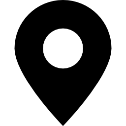

진주남강유등축제
물과 빛, 그리고 우리의 소망
진주남강유등축제는 임진왜란 진주성 전투에서 왜군이 강을 건너는 것을 저지하고,
가족에게 안부를 전하기 위해 남강에 유등을 띄운 데에서 유래되었다.
문화체육관광부 지정 대한민국 대표 축제였음과 동시에 5년 연속 대한민국 글로컬 육성 툭제로 선점된 해외로 진출하는 몇품 죽제이다.
[행사내용]
- 메인프로그램 : 유등
- 부대프로그램 : 남가람 어울림마당, 버스킹 공연
- 소비자 참여 프로그램 : 사랑다리 건너기 체험, 소망등 달기 체험, 유등 띄우기 체험, 유람선
- 기타 내용 : 스탬프 & 트레져 투어, 유등 도슨트, 진주음식큰잔치, 농특산품 판매
[이용요금]
- 사랑다리 건너기 체험(편도: 2,000원, 종일이용권 6,000원)
- 소망등 달기 체험(10,000원)
- 유등 띄우기 체험(3,000원)

- 일시 : 2025.10.04 ~ 2025.10.19
- 장소 : 경상남도 진주시 남강로 626 (본성동) 남강
- 입장료 : 무료 (일부 체험프로그램 유료)
- 개최 : 진주시, 진주문화예술재단, 진주남강유등축제 제전위원회
- 문의 : 055-755-9111, 761-9111
- Instagram : yudeung_festival
먹거리알리오
- 스팸주먹밥 : 5,000원 (250g)
- 참치김치주먹밥 : 5,000원 (250g)
- 멸치주먹밥 : 5,000원 (230g)
- 어묵/매운어묵 : 5,000원 (300g)
* 기재된 가격은 참고 가격으로 변동될 수 있습니다.
* 제공되는 이미지는 축제 주최측을 통하여 제공받은 이미지입니다.
길찾기
